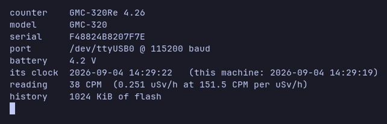
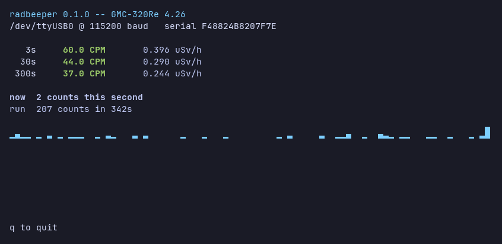
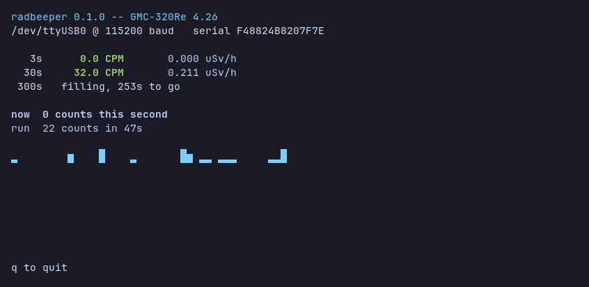
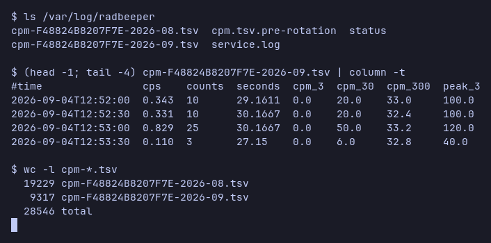

Radiation monitor
A GQ GMC Geiger-Muller counter on the desk · generated 2026-09-04 14:39 by radbeeper 0.1.0 · tube factor 151.5 CPM per µSv/h
A GQ GMC-320 Plus Geiger–Müller counter, plugged into a machine running Alpine Linux as a USB serial device — here shared into a virtual machine over USB pass-through. RadBeeper reads the counter, logs it to tab-separated files, and this page is regenerated from those files by a GitHub Action on every push. The whole of it is forkable: copy your own logs into logs/ and you get a page like this one. Source and instructions.
Counter F48824B8207F7E
Counts per minute, by the hour
By day
| Day | Mean CPM | µSv/h | Peak 3s CPM | Rows | Hours |
|---|---|---|---|---|---|
| 2026-09-04 | 37.8 | 0.250 | 1800 | 1380 | 11.5 |
| 2026-09-03 | 36.7 | 0.242 | 580 | 2760 | 23.0 |
| 2026-09-02 | 38.8 | 0.256 | 600 | 2592 | 21.6 |
| 2026-09-01 | 41.5 | 0.274 | 700 | 2584 | 21.5 |
| 2026-08-31 | 42.9 | 0.283 | 6840 | 2293 | 19.1 |
| 2026-08-30 | 39.3 | 0.259 | 680 | 2294 | 19.1 |
| 2026-08-29 | 40.8 | 0.270 | 8520 | 2572 | 21.4 |
| 2026-08-28 | 41.9 | 0.276 | 680 | 2456 | 20.4 |
| 2026-08-27 | 43.6 | 0.288 | 700 | 2414 | 20.1 |
| 2026-08-26 | 46.5 | 0.307 | 6820 | 2346 | 19.5 |
| 2026-08-25 | 47.8 | 0.316 | 740 | 2583 | 21.5 |
| 2026-08-24 | 45.2 | 0.298 | 8520 | 2270 | 18.9 |
Latest rows
| Time | CPS | 3s | 30s | 300s | Peak 3s | Source | Site |
|---|---|---|---|---|---|---|---|
| 2026-09-04T12:53:30 | 0.110 | 0.0 | 6.0 | 32.8 | 40.0 | flash | -- |
| 2026-09-04T12:53:00 | 0.829 | 0.0 | 50.0 | 33.2 | 120.0 | flash | -- |
| 2026-09-04T12:52:30 | 0.331 | 0.0 | 20.0 | 32.4 | 100.0 | flash | -- |
| 2026-09-04T12:52:00 | 0.343 | 0.0 | 20.0 | 33.0 | 100.0 | flash | -- |
| 2026-09-04T12:51:30 | 0.431 | 0.0 | 26.0 | 34.4 | 140.0 | flash | -- |
| 2026-09-04T12:51:00 | 0.564 | 80.0 | 34.0 | 35.6 | 120.0 | flash | -- |
| 2026-09-04T12:50:30 | 0.862 | 80.0 | 52.0 | 35.8 | 120.0 | flash | -- |
| 2026-09-04T12:50:00 | 0.431 | 0.0 | 26.0 | 35.4 | 60.0 | flash | -- |
| 2026-09-04T12:49:30 | 0.564 | 60.0 | 34.0 | 38.4 | 140.0 | flash | -- |
| 2026-09-04T12:49:00 | 0.789 | 0.0 | 52.0 | 37.6 | 200.0 | flash | -- |
| 2026-09-04T12:48:30 | 0.398 | 140.0 | 24.0 | 36.8 | 140.0 | flash | -- |
| 2026-09-04T12:48:00 | 0.597 | 20.0 | 36.0 | 38.0 | 200.0 | flash | -- |
| 2026-09-04T12:47:30 | 0.530 | 80.0 | 32.0 | 37.8 | 180.0 | flash | -- |
| 2026-09-04T12:47:00 | 0.564 | 40.0 | 34.0 | 38.6 | 140.0 | flash | -- |
| 2026-09-04T12:46:30 | 0.630 | 20.0 | 38.0 | 37.8 | 100.0 | flash | -- |
| 2026-09-04T12:46:00 | 0.617 | 40.0 | 36.0 | 38.8 | 80.0 | flash | -- |
| 2026-09-04T12:45:30 | 0.762 | 0.0 | 46.0 | 39.6 | 200.0 | flash | -- |
| 2026-09-04T12:45:00 | 0.862 | 80.0 | 52.0 | 41.4 | 220.0 | flash | -- |
| 2026-09-04T12:44:30 | 0.530 | 60.0 | 32.0 | 39.2 | 120.0 | flash | -- |
| 2026-09-04T12:44:00 | 0.630 | 0.0 | 38.0 | 40.4 | 180.0 | flash | -- |
| 2026-09-04T12:43:30 | 0.597 | 80.0 | 36.0 | 41.4 | 80.0 | flash | -- |
| 2026-09-04T12:43:00 | 0.514 | 0.0 | 34.0 | 41.0 | 160.0 | flash | -- |
| 2026-09-04T12:42:30 | 0.729 | 80.0 | 44.0 | 41.8 | 140.0 | flash | -- |
| 2026-09-04T12:42:00 | 0.431 | 0.0 | 26.0 | 41.6 | 120.0 | flash | -- |
| 2026-09-04T12:41:30 | 0.729 | 100.0 | 44.0 | 42.8 | 180.0 | flash | -- |
| 2026-09-04T12:41:00 | 0.796 | 60.0 | 48.0 | 42.0 | 160.0 | flash | -- |
| 2026-09-04T12:40:30 | 1.061 | 100.0 | 64.0 | 38.0 | 180.0 | flash | -- |
| 2026-09-04T12:40:00 | 0.446 | 0.0 | 30.0 | 36.0 | 80.0 | flash | -- |
| 2026-09-04T12:39:30 | 0.696 | 60.0 | 42.0 | 36.6 | 100.0 | flash | -- |
| 2026-09-04T12:39:00 | 0.829 | 80.0 | 50.0 | 35.0 | 120.0 | flash | -- |
| 2026-09-04T12:38:30 | 0.597 | 40.0 | 36.0 | 34.4 | 120.0 | flash | -- |
| 2026-09-04T12:38:00 | 0.630 | 40.0 | 38.0 | 33.8 | 120.0 | flash | -- |
| 2026-09-04T12:37:30 | 0.696 | 0.0 | 42.0 | 36.4 | 220.0 | flash | -- |
| 2026-09-04T12:37:00 | 0.652 | 60.0 | 38.0 | 37.8 | 100.0 | flash | -- |
| 2026-09-04T12:36:30 | 0.530 | 40.0 | 32.0 | 36.0 | 140.0 | flash | -- |
| 2026-09-04T12:36:00 | 0.199 | 40.0 | 12.0 | 35.2 | 60.0 | flash | -- |
| 2026-09-04T12:35:30 | 0.729 | 80.0 | 44.0 | 35.2 | 220.0 | flash | -- |
| 2026-09-04T12:35:00 | 0.530 | 140.0 | 32.0 | 33.6 | 140.0 | flash | -- |
| 2026-09-04T12:34:30 | 0.431 | 0.0 | 26.0 | 33.6 | 120.0 | flash | -- |
| 2026-09-04T12:34:00 | 0.720 | 80.0 | 44.0 | 37.2 | 140.0 | flash | -- |
| 2026-09-04T12:33:30 | 0.464 | 40.0 | 28.0 | 36.0 | 120.0 | flash | -- |
| 2026-09-04T12:33:00 | 1.127 | 80.0 | 68.0 | 36.6 | 200.0 | flash | -- |
| 2026-09-04T12:32:30 | 0.928 | 0.0 | 56.0 | 33.6 | 300.0 | flash | -- |
| 2026-09-04T12:32:00 | 0.331 | 0.0 | 20.0 | 33.6 | 80.0 | flash | -- |
| 2026-09-04T12:31:30 | 0.398 | 0.0 | 24.0 | 34.4 | 160.0 | flash | -- |
| 2026-09-04T12:31:00 | 0.171 | 0.0 | 12.0 | 33.8 | 40.0 | flash | -- |
| 2026-09-04T12:30:30 | 0.497 | 20.0 | 30.0 | 36.4 | 80.0 | flash | -- |
| 2026-09-04T12:30:00 | 0.530 | 40.0 | 32.0 | 39.6 | 100.0 | flash | -- |
| 2026-09-04T12:29:30 | 1.028 | 80.0 | 62.0 | 40.6 | 200.0 | flash | -- |
| 2026-09-04T12:29:00 | 0.497 | 0.0 | 30.0 | 36.8 | 80.0 | flash | -- |
| 2026-09-04T12:28:30 | 0.564 | 40.0 | 34.0 | 41.0 | 100.0 | flash | -- |
| 2026-09-04T12:28:00 | 0.631 | 80.0 | 38.0 | 39.4 | 200.0 | flash | -- |
| 2026-09-04T12:27:30 | 0.933 | 80.0 | 56.0 | 37.8 | 140.0 | flash | -- |
| 2026-09-04T12:27:00 | 0.467 | 20.0 | 28.0 | 35.8 | 80.0 | flash | -- |
| 2026-09-04T12:26:30 | 0.300 | 40.0 | 18.0 | 36.8 | 100.0 | flash | -- |
| 2026-09-04T12:26:00 | 0.600 | 0.0 | 36.0 | 38.4 | 160.0 | flash | -- |
| 2026-09-04T12:25:30 | 1.033 | 60.0 | 62.0 | 36.0 | 160.0 | flash | -- |
| 2026-09-04T12:25:00 | 0.722 | 40.0 | 42.0 | 32.6 | 80.0 | flash | -- |
| 2026-09-04T12:24:30 | 0.398 | 0.0 | 24.0 | 31.4 | 120.0 | flash | -- |
| 2026-09-04T12:24:00 | 1.193 | 0.0 | 72.0 | 31.2 | 200.0 | flash | -- |
The last 60 rows of 28,544. Read the full chart: cpm-F48824B8207F7E-2026-08.tsv · cpm-F48824B8207F7E-2026-09.tsv — tab-separated, one row every 30 seconds.
How to use it
Install
One stdlib Python file. No packages, no build, nothing to compile — the install is a copy.
git clone https://github.com/vonglurt/radbeeper.git cd radbeeper && make install doas adduser $USER dialout # then log in again
Find the counter
radbeeper probe

If it finds nothing it says which of four things went wrong, because they have four different fixes: no serial node at all (often a kernel with no ch341 — Alpine's linux-virt has none, linux-lts does), permission on the node, something that is not a GMC, or a port another reader already holds.
Watch it
radbeeper watch

The counter's own reading is a rolling 60-second count — one number with one time constant. RadBeeper counts the blips itself and keeps three windows at once.
- 3 sWatching a source come and go as you move it. Jumpy, and honestly so.
- 30 sReading the room. Settled enough to compare two places.
- 300 sA number worth writing down.
A window shows nothing until it is full, and says how long it still needs. A three-second CPM built from one sample is twenty times noisier than it looks, and drawing it as though it were settled is how a 25 CPM background reads as 60 and somebody goes hunting for a leak.

No counter on the desk? Every command runs against a built-in source, and it is a real one — radioactive decay is a Poisson process, so the simulator draws Poisson samples.
radbeeper --source sim --sim-cpm 400 watch
Log it
radbeeper service
A row every 30 seconds into a dated file per counter, cpm-<serial>-YYYY-MM.tsv — which is rotation by construction, with no cron entry and nothing renaming a file while a service appends to it. Each row carries the peak every window reached since the last one, so a source that came and went between two rows still leaves a trace.

The counter also records to its own flash whether or not anything is listening. radbeeper backfill reads that back and fills the gaps — one row per slot, never over a live measurement, and an hour nobody recorded stays an hour nobody recorded.
radbeeper backfill
Publish it
radbeeper export --logs logs -o index.html
This page. Fork the repository, copy your cpm-*.tsv into logs/, push, and the workflow rebuilds and commits it — served by GitHub Pages with no build step. There is nothing to install in the workflow: the generator is the same one file, which is also why the page cannot drift from the log format.